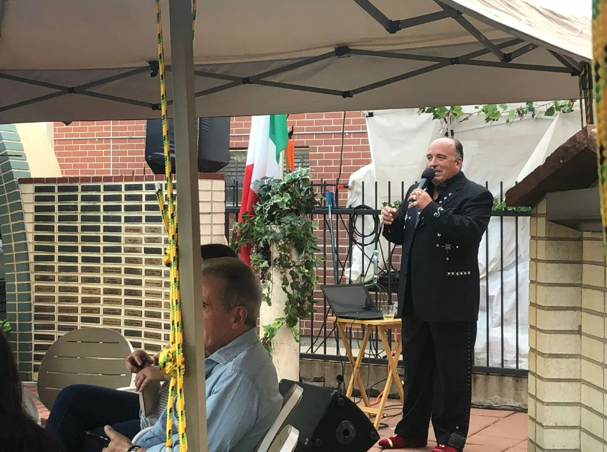

zoe paulson
“Without music, I couldn’t breathe,” said Russell Canino.
by Zoe Paulson
July 26, 2022
For Jonnie Ellis, fitness is a lifestyle. Even more than that, it has always helped him find purpose and healing. “It’s always been a really powerful thing in my life to keep myself grounded. I’ve also seen the impact and change that it can make on people,” he said.
Click to read more >Women Get the Job Done in Federal Heights
by Zoe Paulson
July 20, 2022
But what makes this small city’s town hall so extraordinary? The answer is simple: this is Colorado’s first and only all-female city council.
Click to read more >Brother's Legacy Carried on at FitSol Gym
by Zoe Paulson
June 7, 2022
For Jonnie Ellis, fitness is a lifestyle. Even more than that, it has always helped him find purpose and healing. “It’s always been a really powerful thing in my life to keep myself grounded. I’ve also seen the impact and change that it can make on people,” he said.
Click to read more >
Fly Fishing Documentary Reels in Denver Audience
by Zoe Paulson
May 21, 2022
In May, the Bug Theater in Highland hosted the “Casting Forward” event, a documentary series premiere about women in fly fishing. Ms. Mayhem, an online publication which presents a fresh perspective on feminism, put together the multimedia project. With a special focus on gear, safety, conservation and education, and the lack of visibility for women in marginalized communities, the project showed the surprising issues within the sport, and told the stories of the women who are casting forward to the future.
Click to read more >Youth Sports - Kids are Kickin' It
by Zoe Paulson
December 8, 2021
Every Saturday morning this past fall, the Westminster Youth Soccer League met for gameday, and October 30th was no exception. Fields lined the recreational center in Westminster, Colorado. The crowds gathered, all to see some kids play a game that they loved.
Click to read more >One Note Stand: Singing their Way to Perfection
by Zoe Paulson
November 21, 2021
Every Thursday and Sunday night this past fall, 13 CU Boulder students gathered to practice their singing craft together. Scattered into separate elements, the song hardly sounds like a song. Alone, the different lines sound nice, but to the untrained ear, it does not sound like anything that you might have heard before.
Click to read more >
Doctoring in a New Age
by Zoe Paulson
November 7, 2021
CU Boulder pre-med senior Delaney Koontz discovered her passion for medicine through her mom, who has diabetes. After seeing what her mom’s endocrinologist was able to do for her, Koontz decided that she wanted to do that for others.
Click to read more >